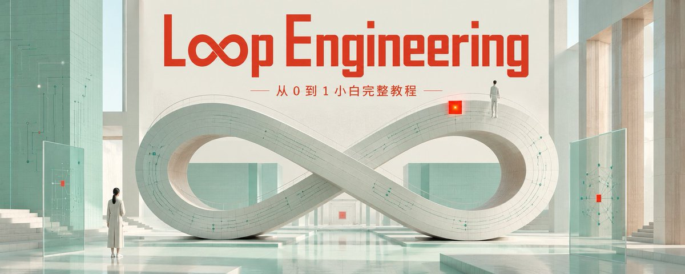
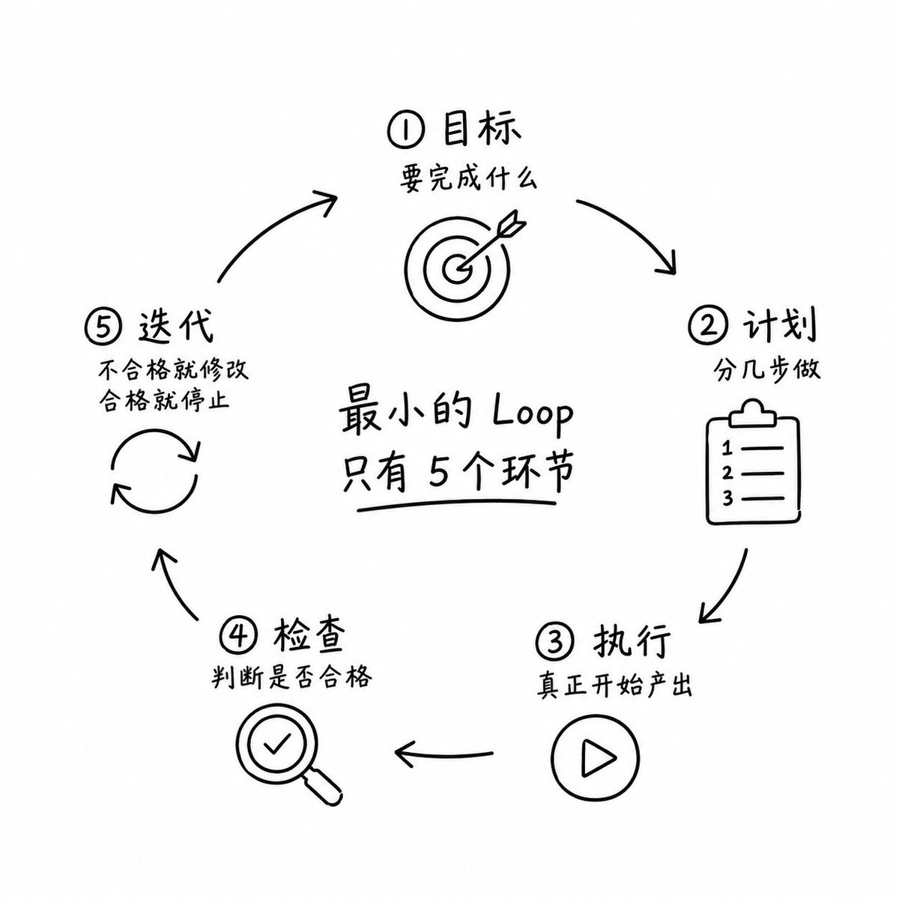
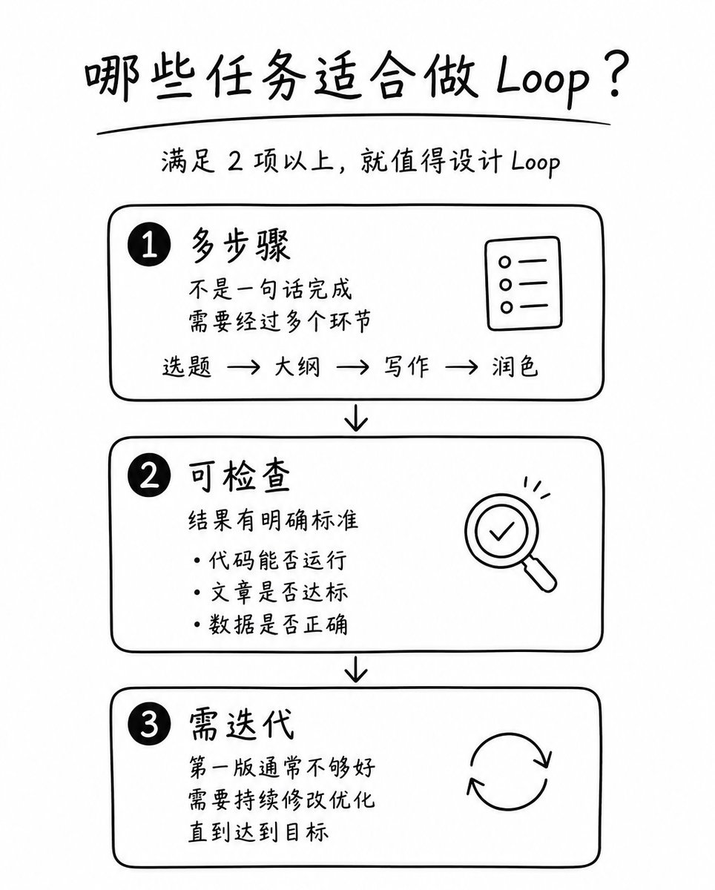
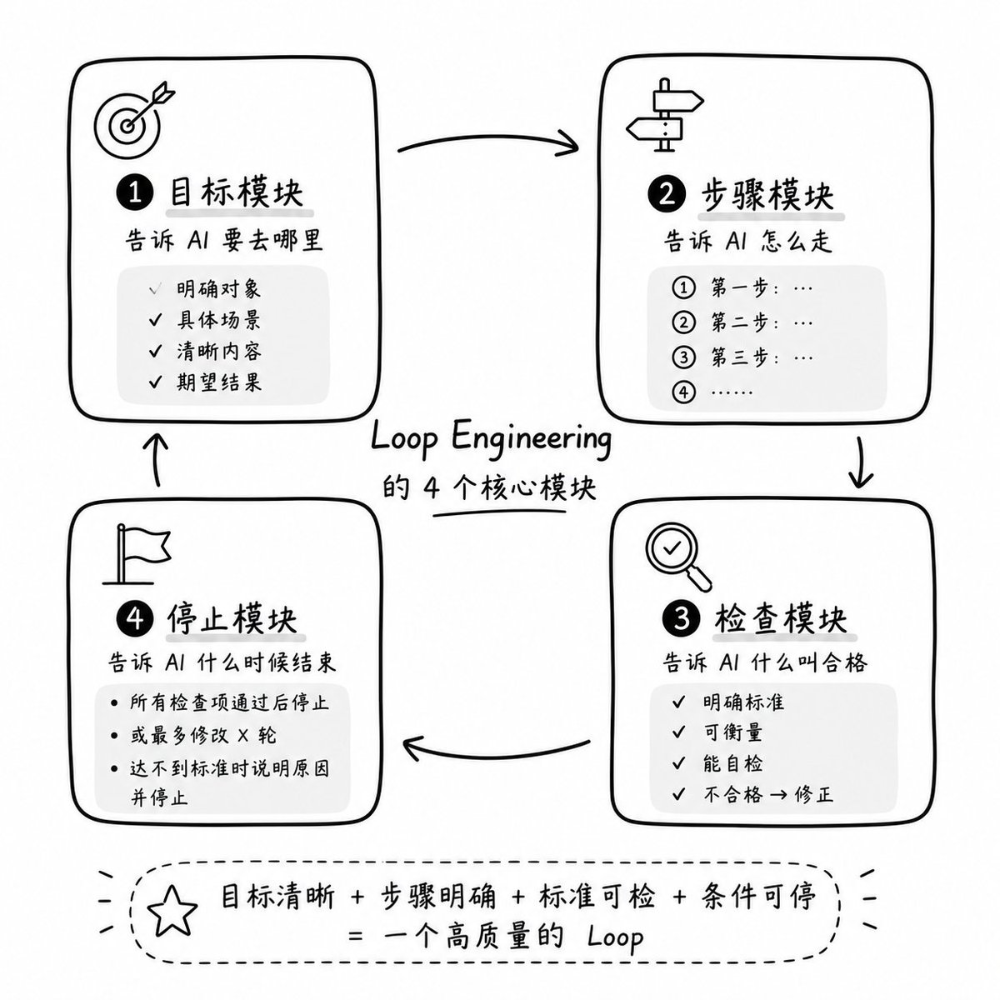

Loop Engineering
从 0 到 1 小白完整教程
Adrian Punk (@AdrianPunk115) 那条 623.1K 浏览的中文 X 长文。Loop Engineering 是把"单次提问"换成"设计 AI 自动干活的循环"——本文 9 章讲透小白入门路径：什么是 Loop / 哪些任务适合 / 4 个核心模块（目标·步骤·检查·停止）/ 5 个照抄即用 prompt 模板（最小 Loop / 写文章 / 写代码 / 学习技能 / 通用任务）。

Adrian Punk · Loop Engineering 从 0 到 1 小白完整教程 · 2026/06/22
你现在打开 AI，大概率还是这样用：「帮我写一篇文章。」「帮我改一下代码。」「帮我总结这个文件。」——这叫单次提问。
但真正会用 AI 的人，已经不只是提问了。他们在设计一个循环：让 AI 先理解任务，再执行，再检查，再修正，直到结果达标。
本文按 9 章展开：先把 Loop Engineering 和普通 prompt 的本质区别讲清楚（cap 01-02），再告诉你哪些任务值得设计 Loop（cap 03）、最小可用模板长什么样（cap 04）、4 个核心模块怎么搭（cap 05），接着给 3 个直接照抄的 Loop + 5 个 prompt 模板（cap 06 + cap 09），中间夹一份小白学习路径（cap 07）和 5 个最容易踩的坑（cap 08）。看完你能直接动手。
Why you need Loop Engineering
以前用 AI，最重要的是 Prompt Engineering——也就是你怎么问，AI 才能答得更好。但现在问题变了。
因为 AI 不只是会聊天了，它已经能读文件、写代码、查资料、操作网页、调用工具、运行测试。这时候，你只会写提示词，就像你只会给员工发一句微信：「把这个项目做好。」听起来很有方向，实际很难落地。
Loop Engineering 解决的是另一个问题：怎么让 AI 按步骤持续工作，并且自己检查结果。
举个简单例子：你要让 AI 写一篇小红书笔记——
普通提示词
Loop 提示词
再给我 5 个标题方向。
选出最有点击感的 1 个。
然后写正文。
写完后检查：标题是否有吸引力、正文是否像真人写的、有没有夸张承诺。
如果不符合，就自己修改一轮。
最后输出最终版。
差别不在"词写得更高级"。差别在于，你把 AI 从"答题机器"变成了"执行流程的人"。
What Loop Engineering really is
Loop，中文就是循环。Engineering，是工程化。Loop Engineering，就是把一个任务拆成可以反复执行、检查、修正的工作循环。
最小的 Loop 只有 5 个环节：

你可以把它想成洗衣机——你不会每 5 分钟手动告诉洗衣机："现在进水。""现在搅拌。""现在排水。""现在甩干。"你只需要选择模式，然后机器自己完成一整套流程。
Loop Engineering 也是一样。你不是每一步都亲自盯着 AI，而是提前告诉它：
"什么叫合格。"
"失败了怎么修。"
"什么时候停止。"
这四件事说清楚，AI 才能稳定输出。
Which tasks fit a Loop
不是所有任务都需要 Loop。如果你只是问「帮我翻译这句话」「给我 10 个标题」「解释一下这个概念」，这种一次性任务，用普通提示词就够了。
适合 Loop 的任务，一般有三个特点：

1. 需要多步骤。比如写一篇长文章，它不是一句话能完成的。你至少要经历：选题分析、标题设计、大纲搭建、正文写作、风格检查、删废话、最终润色。如果你每一步都手动问，过程会很碎。做成 Loop，就可以让 AI 一口气跑完整个流程。
2. 需要检查质量。比如写代码——代码不是"看起来像代码"就行。它要能运行，要没有明显报错，要符合项目已有风格。这就必须有检查动作：
如果测试失败，读取报错原因并修复。
修复后再次运行测试。
直到测试通过或说明无法继续。
这就是典型的 Loop。
3. 需要反复修改。比如做简历、做销售文案、做短视频脚本。第一版通常不会最好。你需要它自己问：
"这个案例够真实吗？"
"这个开头能不能更抓人？"
只要任务需要反复打磨，就适合 Loop。判断标准很简单：需要做两轮以上的事，就值得设计 Loop。
A minimal viable Loop
小白可以直接套这个模板。
这个模板已经能解决大部分小白任务。比如你要写公众号文章，可以这样填：
这就是第一个 Loop。它不复杂，但已经比"帮我写一篇文章"强很多。小白学 Loop，不是先学复杂系统，而是先学会写清楚验收标准。
The 4 core modules

1. 目标模块：告诉 AI 要去哪里
目标越模糊，Loop 越容易跑偏。
风格要简洁，包含头像、简介、项目列表、联系方式。
页面打开后第一屏就能看清我是谁。
你看，后者有对象、有场景、有内容、有结果。AI 就不容易乱猜。检验标准：你把目标发给一个真人，他能不能知道要交付什么。
2. 步骤模块：告诉 AI 怎么走
不要只说"做好"。要让它按顺序来。比如：
第二步：列出页面结构
第三步：写代码
第四步：检查移动端
第五步：修复明显问题
第六步：总结修改内容
这就像你给新人安排工作。如果你只说"你去做运营"，他会懵。如果你说"先整理 20 个竞品标题，再归类，再写 10 个新标题"，他就能动起来。步骤不是限制 AI，而是减少 AI 犯傻的空间。
3. 检查模块：告诉 AI 什么叫合格
这是 Loop Engineering 最重要的一步。很多人只写任务，不写检查标准。结果 AI 输出一堆看似完整、实际不能用的东西。
比如你让 AI 写文章，检查标准可以是：
- 开头有没有具体人或数字
- 每段是不是太长
- 有没有空话套话
- 读者看完知不知道下一步做什么
比如你让 AI 写代码，检查标准可以是：
- 页面能不能打开
- 控制台有没有报错
- 核心功能能不能点击
- 手机端有没有遮挡
比如你让 AI 做表格，检查标准可以是：
- 列名是否完整
- 数据是否重复
- 公式是否能计算
- 汇总结果是否合理
检查标准越具体，AI 越能自己修。没有检查标准的 Loop，就像没有刹车的车。
4. 停止模块：告诉 AI 什么时候结束
Loop 最怕两种情况。一种是没做完就停。另一种是已经做完了还继续改，把好东西改坏。所以你必须写停止条件。比如：
或者：
如果 2 轮后仍然不满足，请说明原因，不要继续猜。
这个设置非常重要。因为 AI 有时候很"勤奋"，会不断优化。但优化不等于变好。比如标题第一版很有力：「普通人用 AI 翻身，先学会这 4 个循环」。改到第五版可能变成：「关于人工智能应用能力提升的系统性方法研究」。看起来高级，实际上没人想点。好的 Loop，不是永远运行，而是在正确的时候停止。
3 Loops you can copy now
1. 写文章 Loop——适合：公众号、小红书、X。
2. 写代码 Loop——适合：个人网站、工具页面、自动化脚本、小程序原型。
3. 学习技能 Loop——适合：学 AI、学编程、学剪辑、学写作、学英语。
From newbie to pro: a learning path
第一阶段：先学会写清楚任务（时间：1-3 天）
你先不用管什么 Agent、工作流、自动化平台。每天拿一个真实任务练习：
- 改一篇文章
- 整理一个表格
- 写一个脚本
- 做一个旅行计划
- 生成一个短视频选题表
每次都按这个格式写：
步骤是什么
检查标准是什么
停止条件是什么
检验标准：你能不用模板，也能写出一个清晰任务。
第二阶段：学会加检查清单（时间：3-7 天）
这一阶段重点不是让 AI 多做，而是让 AI 做完会检查。
比如写文章，就加：检查有没有空话。检查有没有长段落。检查有没有不适合小白的词。
比如写代码，就加：检查功能是否可点击。检查页面是否报错。检查移动端是否正常。
检验标准：AI 每次输出前，都会主动做一次自查。
第三阶段：学会控制迭代次数（时间：7-14 天）
你要开始控制 Loop 的边界。比如：
每轮只解决最重要的 3 个问题。
不要为了润色而大改结构。
这会让 AI 更稳定。否则它可能一轮又一轮地改，最后偏离最初目标。
检验标准：AI 不会无限扩写，也不会把任务越做越大。
第四阶段：学会组合多个 Loop（时间：14-30 天）
当你熟练以后，可以把大任务拆成多个小 Loop。比如做一个知识付费小课：
第二个 Loop：课程大纲
第三个 Loop：单节课脚本
第四个 Loop：海报文案
第五个 Loop：发布计划
每个 Loop 只负责一件事。这样比让 AI 一次性"帮我做一门课"靠谱很多。复杂任务的秘密，不是一个超级 Prompt，而是一串小 Loop。
5 pitfalls every beginner hits
坑 1：目标太大
"帮我做一个赚钱项目。"——这句话基本没法执行。你要改成：
越具体，越能落地。
坑 2：没有验收标准
"写得好一点。"这不是标准。"标题 20 字以内，有具体收益，不夸张承诺。"——这才是标准。
坑 3：让 AI 一次做太多事
小白最喜欢一句话塞满："帮我写商业计划书、做 PPT、设计 logo、分析竞品、顺便给我一个融资方案。"AI 会做，但质量会飘。正确做法是拆开：先做竞品分析，再做定位，再做方案。
坑 4：不让 AI 解释过程
有些任务你只要结果就行。但新手阶段，最好让 AI 简短说明："你做了什么？""为什么这样做？""还有什么风险？"——这能帮你理解 Loop 是怎么跑的。
坑 5：过度相信 AI 自查
AI 会检查，但它不是神。尤其是事实、数据、法律、医学、金融这类内容，你必须人工复核。Loop 能提高效率，但不能替你承担判断责任。AI 可以帮你跑流程，但最后按下发布键的人还是你。
Start practicing today
别先学理论，今天就做一个最小练习。选择一个你手上真实的小任务，比如：
- 改一篇朋友圈文案
- 整理一个会议纪要
- 做一个 7 天学习计划
- 写一个产品介绍
- 优化一页简历
然后复制这段：
你只要能把括号里的内容填好，就已经入门了。
Loop Engineering 的核心就一句话：把"我希望 AI 做好"，改成"我告诉 AI 怎么判断做好"。
从今天开始，不要只问 AI 一个问题。
- 给它一个目标
- 给它一个流程
- 给它一个检查表
- 再给它一个停止条件
这就是你从普通 AI 用户，变成 Loop Engineer 的第一步。
SOURCES & CREDITS
引用与原文出处
-
ORIGINAL ARTICLE
Loop Engineering 从 0 到 1 小白完整教程
作者：Adrian Punk (@AdrianPunk115) · 发布于 2026/06/22 · 623.1K 浏览
原文链接：https://x.com/AdrianPunk115/status/2068947825120223659 - AUTHOR · X https://x.com/AdrianPunk115
- AUTHOR · GITHUB https://github.com/adrianpunk/Punk-Skill — Punk-Skill 仓库
- INTERPRETATION 本文为解读版本，按中文阅读习惯重排。原文中所有 prompt 模板均保留中文原貌，便于直接复制使用。如需引用请以原文为准。
这 5 个 prompt 模板是 Adrian Punk 公开分享的，复制即用——但建议按你的具体任务调整。Loop 不是越通用越好用，而是越贴合你的目标、步骤、检查标准、停止条件，越能让 AI 稳定输出。
从今天开始，不要只问 AI 一个问题·给它一个目标、一个流程、一个检查表、一个停止条件。
读完了。下一步：挑一个今天的小任务，复制 Prompt 1，把括号填上。